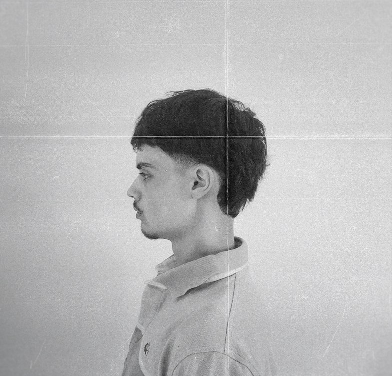

En cours
Photo — 4:3
3/5 DIR. ART & DESIGN GRAPHIQUE

Attiré depuis toujours par l’édition, l’amour des lettres et la force de l'image, mon cheminement vers le design graphique s'est imposé comme une évidence. Après un temps d'exploration, j'ai trouvé mon ancrage à l’École Brassart, où je prépare aujourd'hui un Mastère en Direction Artistique.
Mon univers créatif ne s'arrête pas aux frontières du visuel. L’écriture, intimement liée à la musique, ainsi que les jeux de stratégie qui ont façonné ma jeunesse, sont autant de mondes qui ont forgé mon regard.
Ces terrains d’expression pluriels nourrissent ma sensibilité à la communication et mon attachement à la culture populaire.
Projet 02 — Identité
Une sélection de projets. Chaque ligne ouvre la fiche du projet.
Attiré depuis toujours par l’édition, l’amour des lettres et la force de l'image, mon cheminement vers le design graphique s'est imposé comme une évidence.
L’écriture, intimement liée à la musique, ainsi que les jeux de stratégie qui ont façonné ma jeunesse, sont autant de mondes qui ont forgé mon regard.
Formation, expériences, compétences
En cours
En cours
En cours
En cours
Un projet, une collaboration ou une simple question : écrivez-moi.
Qui édite ce site, où il est hébergé, et ce que vous pouvez en faire.